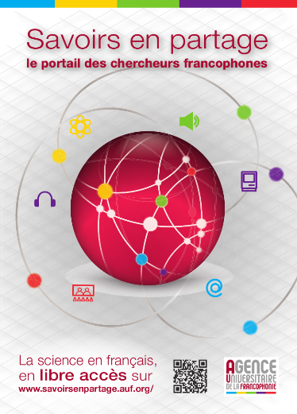

« Savoirs en partage » est un portail qui propose à la communauté universitaire de nouveaux services destinés à faciliter le travail en commun. Ce portail permet également l'accès unifié vers un ensemble de ressources et documents produits en partenariat avec nos universités membres.
GGGG oooo rrrrrAinsi, vous pourrez accéder depuis ce portail à :
Le répertoire présente une base de données de plus de 7000 chercheurs, étudiants-chercheurs et enseignants-chercheurs identifiés par domaines de recherche prioritaires.
La possibilité est offerte aux chercheurs d'annoncer sur ce portail un évènement scientifique en l'inscrivant dans un agenda consultable par tous. C'est aussi un outil de communication et de veille au service des universitaires et scientifiques francophones qui leur permet de se tenir informés des manifestations scientifiques et de répondre aux appels à communications et contributions ainsi qu'aux appels à projets.
Le portail « Savoirs en partage » favorise la diffusion de documents scientifiques mis en ligne par les établissements membres de l'Agence Universitaire de la Francophonie en collaboration avec les Campus numériques francophones, Direction régionales, etc. : un ensemble d'ouvrages, revues, articles, cours en ligne, etc sont ainsi simplement accessibles grâce à un moteur de recherche qui permet de les interroger simultanément. Un moissonneur OAI permet l'ajout régulier et automatique de nouvelles ressources.
Les sites retenus ici ont été créés par des universités membres de l'AUF et des partenaires internationaux : cours en ligne, revues électroniques, fonds patrimoniaux, etc. constituent une source importante de ressources pédagogiques et scientifiques, à la disposition de tous.
Les actualités scientifiques proposés sur différents sites de l'AUF sont reprises ici.
Toutes ces rubriques sont accessibles par une double entrée, par région ou par discipline, en fonction de la situation géographique ou des centres d'intérêt des utilisateurs. Le contenu peut ainsi être configuré avec précision selon les besoins des chercheurs, des directions régionales ou des interlocuteurs sur le terrain sans